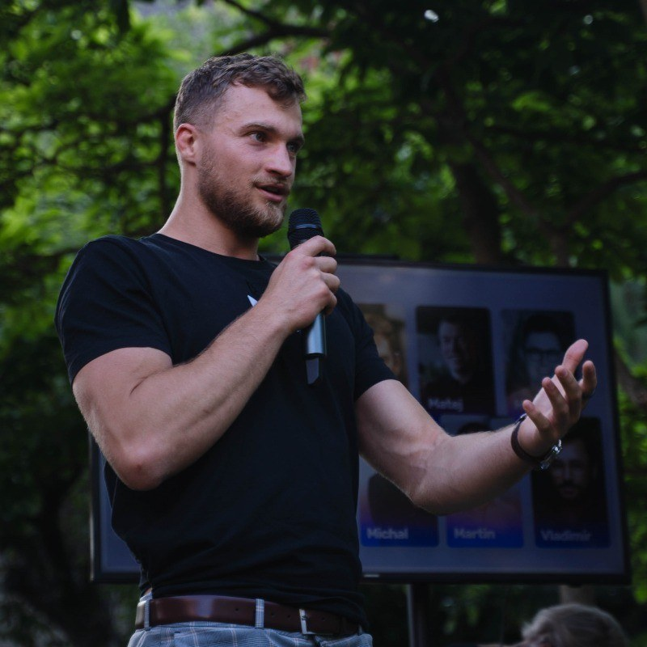

Evidence over assertion
If we can't point at the slide, cell or data point behind a claim, we don't make the claim.
Every year, thousands of companies that should have been funded aren't — because the person evaluating them had eleven minutes, no context, and a document optimised for persuasion rather than truth. We think that's a solvable information problem.
Our founding team has sat in the seat that writes the memo and the seat that waits for it. Both are frustrating for the same underlying reason: the information needed to make a good decision exists, but it's scattered across a deck, a spreadsheet, a product, a founder's head and twelve months of customer behaviour — and nobody has time to assemble it.
Investors compensate with pattern-matching, which works until it quietly encodes bias. Founders compensate by optimising the deck, which teaches them to be persuasive rather than correct. Both sides end up trading in narrative.
FounderOS exists to make the underlying evidence legible — to both sides, in the same structured form, at a cost that a pre-seed company can afford. That's the whole thesis.
An AI system should never be the thing that decides whether a company gets funded. It should be the thing that ensures the human making that decision has read the company properly — and that the founder knew what would be asked.
Every score we produce shows its inputs. Every claim links to its source. Every conclusion can be argued with. If our output can't be challenged, it isn't intelligence — it's just confidence.

The first time I raised money, I was told no eleven times before anyone explained why. The twelfth investor spent four minutes on my unit economics and told me something my own board hadn't. That conversation was worth more than the previous eleven combined — and I only got it by accident.
That's the part that stayed with me. The information wasn't secret. It wasn't even hard to work out. It simply lived in the head of a person who had no particular reason to spend an hour helping a founder they weren't going to back. Multiply that by every company that never got the four minutes, and you start to see how much good work gets lost to a process that was never designed to give feedback.
FounderOS is my attempt to close that gap. Not to replace investors — capital is a human business and should stay one — but to make sure that by the time a founder walks into that room, they already know what they're going to be asked. And that the person on the other side of the table is reading the company, not the deck.
If you're building something and you want an honest read on where you stand, I'd genuinely like to hear about it. My inbox and my LinkedIn are both open.
If we can't point at the slide, cell or data point behind a claim, we don't make the claim.
Nothing is shared without an explicit act. No training on your documents. Deletion means deletion.
We charge for software, never for outcomes. It's the only way investor matching can be honest.
A report that flatters you is worthless. We'd rather tell you not to raise yet than sell you a nicer score.
A weekend tool that scored our own portfolio companies' decks. It disagreed with us on two of them. It was right on both.
Replaced the single-model approach with six specialised agents after discovering that disagreement between them was more useful than any individual verdict.
Rolled out to founders and three funds. The Founder Score became live rather than static after founders asked the same question repeatedly: "what would move this?"
Free tier launched, enterprise licensing opened to accelerators, family offices and public innovation programmes.
As the dataset compounds, predictive benchmarking — telling a founder not just where they stand, but what companies at this exact position went on to do.
A deliberately mixed team — because a venture product built only by engineers gets the maths right and the judgement wrong.

Sets the product direction and the venture rubric behind the platform. Works directly with the founders and funds using FounderOS.
LinkedInMachine learning research background; built retrieval and evaluation systems for regulated industries.
Ten years as an early-stage investor; wrote the first version of the scoring rubric.
Previously built diligence tooling used by growth-stage funds across three continents.
Applied ML, backend infrastructure, venture research and enterprise solutions — remote across EU and India time zones.
We're asking you to trust an automated evaluation with a consequential decision. Here's where we think the line sits.
The fastest way to understand what we've built is to point it at a real company — yours, or one you already have an opinion about.